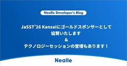

Nealle Developer's Blog
https://nealle-dev.hatenablog.com/
株式会社Nealleのエンジニアによる開発者ブログ
フィード

JaSST’26 Kansaiにゴールドスポンサーとして協賛いたします & テクノロジーセッションの登壇もあります！ 3
3
Nealle Developer's Blog
ニーリーは、2026年7月3日（金）に開催される「JaSST’26 Kansai」にゴールドスポンサーとして協賛いたします。 JaSST’26 Kansaiの概要 日程: 2026年7月3日（金） 9:00〜18:55 会場: グランフロント大阪北館タワーB10階 ナレッジキャピタルカンファレンスルームタワーB 主催: 特定非営利活動法人 ソフトウェアテスト技術振興協会 (ASTER) JaSST'26 Kansai 実行委員会 公式サイト: https://jasst.jp/kansai/26-about/ 今回は「シン・ソフトウェアテスト～ 新時代に築き直すソフトウェアテストの入門・基礎」…
3日前

クラウドネイティブ会議にSREチーム全員で参加しました！
Nealle Developer's Blog
こんにちは、SREチームの宇田川です。 5/14、5/15に名古屋の中日ホール&カンファレンスで開催された「クラウドネイティブ会議」にSREチーム全員で参加しました！ この記事では、イベントの様子やセッションの内容を振り返ります。 会場の様子 「クラウドネイティブ会議」は、中日ホール&カンファレンスの1フロア、すべてを使い実施していました。 スポンサーブースもたくさんの企業が参加しており、休憩時間もいろんなコンテンツを楽しむことができました。 ブースに参加するとスタンプがもらえる、スタンプラリーもやっており、景品としてグッズもいただけました！ 気になったセッション ここからはSREチームの同僚…
1ヶ月前
TSKaigi 2026 登壇とブース出展の振り返り
Nealle Developer's Blog
はじめに こんにちは、 ARCH チームの立川です。 先日、 2026 年 5 月 22 日(金) 〜 23 日(土)の 2 日間にわたって「TSKaigi 2026」 が開催されました。今回はそのイベントについて、 登壇してきた話 Gold スポンサーとしてニーリーが協賛し、ブース出展をしてきた話 の 2 本立てで書きたいと思います。 登壇について 今回、自分が提出したプロポーザルがめでたく採択され、「TypeScriptとAngular Signal で実現する保守性の高いアプリケーション設計 - 3層アーキテクチャによる責務分離の実践（たつかわ）」というタイトルで登壇してきました。 提出…
1ヶ月前
奈良から片道6時間、スクラムフェス新潟2026に行ってきた
Nealle Developer's Blog
こんにちは、ニーリーでQAエンジニアをしている池端（@bacchiQA）です。 先週末に、スクラムフェス新潟2026へ参加してきました。 スクラムフェスへの参加は今回が初めてで、もちろんオフラインでの参加も初めてでした。 そして何を血迷ったのか、今回奈良から陸で行こうと決め？片道6時間（奈良→京都→東京→新潟）かけて行きました….遠かった....。 そして6時間かけて新潟駅に着いてやることは決めていました。ラーメンです。 ラーメン好きとしては、初新潟でラーメンを食べない選択肢はなく、参加記なのに最初のハイライトがラーメンです笑。 今回は弊社からQAの自分とVPoE菊地（@_tinoji）の2人…
2ヶ月前
ついに決定！ニーリーの次期バックエンド開発言語はKotlin！
Nealle Developer's Blog
はじめに 結局この記事の後編を書いていない野呂です。 ところで、これまでバックエンドの開発には一貫してPythonを使ってきたニーリーですが、この度、共通基盤において新たな言語を採用することになりました。 nealle-dev.hatenablog.com今後は絶対にPythonは使わない！というわけではなく、むしろPark Directのバックエンドの中心は引き続きPythonなのですが、採用状況や時流、会社・事業のフェーズ感などを考慮した結果、その新しい言語を中心に使っていくことになりました。別にもったいぶる訳ではないですが、あえて意思決定を順を追って紹介した上で、どの言語を選定したか紹介…
2ヶ月前
技術の総合格闘技でプロセスをハックする！ニーリーの「サクセスエンジニア」がFDEっぽくて面白い
Nealle Developer's Blog
こんにちは。ニーリー VPoEの菊地(@_tinoji)です。 ニーリーでは現在、マルチプロダクト化を加速するためにエンジニア採用をめちゃくちゃ強化中です。共通基盤プロダクトエンジニアとプラットフォームエンジニアに続き、ポジションの宣伝をさせてもらいます。 nealle-dev.hatenablog.com nealle-dev.hatenablog.com 事業が急成長している & オペレーションの重要度が高い から生まれる役割 今回紹介するのはサクセスエンジニアというポジションです。ニーリー独自のポジション名なので聞き馴染みがないと思いますが、めちゃおもろポジションなので語らせてください。…
2ヶ月前
AI時代のPlatform Engineeringで生産性をブーストする。1人目プラットフォームエンジニアの募集開始！
Nealle Developer's Blog
こんにちは。ニーリー VPoEの菊地(@_tinoji)です。 ニーリーでは現在、マルチプロダクト化を加速するためにエンジニア採用をめちゃくちゃ強化中です。 note.nealle.com あらゆるポジションで募集を行っているのですが、この度新しいポジションとしてプラットフォームエンジニアをオープンしたので紹介させてください。 AI時代に新解釈したPlatform Engineeringをゼロからやれる、しかもめちゃくちゃ事業が伸びてる環境で。というのは正直かなりアツいと思います。ぜひ！！ ニーリーのPlatform Engineeringのこれまで ニーリーのPlatform Enginee…
3ヶ月前
JDDUG meetup #16@福岡 参加レポート~人生初の登壇をしてきた~
Nealle Developer's Blog
はじめに こんにちは、SREチームの森原(@daichi_morihara)です。2/26に開催された JDDUG(Japan Datadog User Group) meetup #16@福岡に参加してきました。人生初の登壇も行なったので、記念にイベント参加レポートを書きたいと思います！ 会場到着 会場に入った瞬間にとてもお洒落な料理が目に入ってきて感動しました！お腹が空かないようにイベント直前にビッグマックとサムライマックを食べてきた自分を恨みましたね (笑) (もちろん別腹なので、美味しくいただきました！) 見てるだけで幸せになるお洒落な料理 ハンズオンコンテンツ 前半パートではハンズオ…
3ヶ月前
「1億人規模の経済圏」のプラットフォームをつくる。共通基盤プロダクトエンジニアを募集します！
Nealle Developer's Blog
こんにちは。ニーリー VPoEの菊地(@_tinoji)です。 ニーリーでは現在、マルチプロダクト化を加速するためにエンジニア採用をめちゃくちゃ強化中です。 note.nealle.com あらゆるポジションで募集を行っているのですが、今日はその中でもエンジニアのキャリアの特異点となりうる、共通基盤プロダクトエンジニアというポジションについて宣伝させてください。 1億人に利用されるポテンシャルを持つ共通基盤をつくっている ニーリーの共通基盤プロダクトエンジニアが今どんなことにチャレンジしているかについては、ぜひこちらの記事をお読みください。 nealle-dev.hatenablog.com …
3ヶ月前
TSKaigi 2026にGoldスポンサーとして協賛いたします & セッションの登壇もあります！
Nealle Developer's Blog
ニーリー VPoEの菊地( @_tinoji ) です。 ニーリーは、2026年5月22日(金)〜23日(土)の2日間にわたって開催される「TSKaigi 2026」に Gold スポンサーとして協賛いたします。 TSKaigi 2026 の概要 日程: 2026年5月22日(金)〜23日(土) 会場: ベルサール羽田空港 ↓↓公式サイトはこちら↓↓ 2026.tskaigi.org 3/23の18時からチケット販売されておりますので、ぜひお早めにチケットをゲットしましょう！ 🎫いよいよ明日チケット販売開始🎫明日18:00からTSKaigi 2026のチケット販売第一弾を開始します。すぐに売切…
3ヶ月前
Product Management Summit 2026 にExhibitionスポンサーとして協賛いたします
Nealle Developer's Blog
ニーリー VPoEの菊地(@_tinoji) です。 ニーリーは、2026年4月28日（火）に開催される「Product Management Summit 2026」に Exhibition スポンサーとして協賛いたします。 Product Management Summit 2026 の概要 日程: 2026年4月28日（火） 9:00〜18:55 会場: JPタワーホール＆カンファレンス（KITTE 4F） 主催: ファインディ株式会社 公式サイト: https://product-management-summit.findy-tools.io/2026 「Product Manage…
4ヶ月前
次世代モビリティインフラへの小さくて大きな一歩を踏み出す〜月極駐車場と1日貸しをつなぐワンデイパークが目指す世界〜
Nealle Developer's Blog
こんにちは、株式会社ニーリーでエンジニアリードをしている鈴木正太郎です。 和菓子では上用饅頭が好きです。 先日公開した入社エントリでは、10年働いた会社を離れてニーリーにジョインした理由を書きましたが、今回は、#ニーリー開発組織の野望シリーズとして、私がエンジニアリードを務めるワンデイパークというプロダクトについて、その魅力と可能性、そして開発の舞台裏を書いてみます。 ワンデイパークとは ワンデイパークは、Park Directに登録されている月極駐車場を、1日単位で貸し出せるサービスです。1日貸しの設定がされた駐車場は、専用のWebサイトから、事前に予約・支払いをすることで、当日は予約した区…
5ヶ月前
数GBのLLM用モデルを、LambdaでLinuxシステムコールを駆使して本番水準で動かす
Nealle Developer's Blog
はじめに お疲れ様です。2357giです。先日のre:Inventで参加したセッション「Build high-performance inference APIs with Lambda SnapStart」にて、「数GB級のLocal LLMをサーバレスで、本番環境の要求水準で動かす」方法を学んできました。 (その際のセッション形式が「チョークトーク」というもので、めちゃめちゃ良い体験だったのですがその話はこちら ) llama.cppなどの比較的軽量なLLM(1GB~5GB)や、それらと同程度のサイズの自作モデルをLambdaを用いて動かすというものです。 bedrockにカスタムモデルイ…
6ヶ月前
業務を無くすため、Opsファースト開発という選択肢
Nealle Developer's Blog
この記事は、ニーリーアドベントカレンダー2025 の25日目の記事です。 ニーリーCTOの三宅です。今年もトリを担当します。 去年はDXCriteriaで一年を振り返りました。 今年も振り返りを書くつもりでしたが、振り返ってみると、一番伝えたいのは別でした。 採用で最も苦戦したプロダクトマネージャーの面白さです。 この記事では、ニーリーのプロダクトマネージャーの役割と面白さを1つ紹介します。 テーマは、「業務を無くす」プロダクトマネジメントです。 ニーリーのプロダクトマネージャーとは ニーリーのプロダクトマネージャー（以下、PdM）は、ミッションを「顧客とマーケットに向き合い、価値提供を創造し…
6ヶ月前
Claude Code hooksでMacの通知を出して、通知から適切なtmuxペインに飛ぶ
Nealle Developer's Blog
お疲れ様です。@2357gi です。 筆者環境では、Terminal.app で開いた tmux の複数のセッション・ペインで同時並行に Claude Code を動かしてます。 Terminal.app 以外を開いてたり、Terminal.app を開いても裏画面の tmux ウィンドウ/セッションで動いている Claude Code の待機状態に気づかないことが多々あります。 そこで、受付状態になった時にいい感じにMacの通知を出してくれるやつと、その通知から直接待機状態の Claude Code が開かれている tmux ペインを開くやつを作りました。 Claude Code にお願いす…
6ヶ月前
ニーリー初のMeetupイベントを開催！〜準備不足を反省してポストモーテムを書く〜
Nealle Developer's Blog
この記事はニーリーアドベントカレンダー2025の24日目の記事です。 こんにちは、菊地(@_tinoji)です。今年のアドカレもクリスマスイブを担当させてもらいます！🎄 1ヶ月前に、ニーリー初となるMeetupイベントを開催し、予定枠を増枠するほど多くの方にお越しいただきました。 nealle.connpass.com 当日の様子(撮影許可はいただいてますが参加者には一応ぼかしを、、) ご来場の皆さんにはかなり楽しんでいただけたとは思う一方、僕の不手際でかなりご迷惑をおかけしてしまったので、会の終わりに「アドカレでポストモーテム書きます！」と宣言しましたw ニーリーで普段使っているポストモーテ…
6ヶ月前
手を広げて気づいた、集中の本質—「捨てない」という選択
Nealle Developer's Blog
手を広げて気づいた、集中の本質—「捨てない」という選択 こんにちは、株式会社ニーリーの中村です。 昨年アドカレでランニングを宣言したわけですが、見事継続し、今年の区民マラソン完走を果たすことができました！ 最初はほんと足が痛くて辛すぎましたし、大会1ヶ月前にコケて、1週間近く走れない、1週間前に熱が出て直前まで走れない、なんてこともありましたが、ほんとよかったです。 さて気づけば、ニーリーに入社して3年が経ちました（2022年8月入社です）。 この3年間、私はサクセスエンジニアとして様々な経験を積んできましたが、振り返ると「集中する」ことの意味を、少しずつ学んできた3年間だったと思います。 皆…
6ヶ月前
re:Inventに参加してきました！参加にあたって目標としたことと、その振り返り
Nealle Developer's Blog
お疲れ様です！SREの大木 @2357gi です。そろそろ冬なのでスノボのために身体を温めています。 re:Invent 2025 へ参加してきたので、早速レポートをしていきたいと思います！ 今回は弊社とAWSのリセール契約を結んでいる Megazoneさんに招待していただきました。大感謝です🔥 具体的なセッションのレポートや、「準備してよかったもの・いらなかったもの・しておけばよかったものまとめ」などはまた別のテックブログとしてアウトプットする予定です🙌 ざっくり前提：re:Inventとはなんぞや ざっくりre:Inventについて説明しますと、AWSが毎年ラスベガスで開催するクラウドサー…
6ヶ月前
自動化・AIワークフローのための"Scoped SSOT"という考え方
Nealle Developer's Blog
はじめに この記事はBPaaS/AI+BPO Advent Calendar 2025 22日目の記事です。 サクセスエンジニアとして働いている増田です。 サクセスエンジニアってなんだ？ と興味を持たれた方はぜひこちらの記事を読んでください。 日々の業務では、社内ツールの開発やデータ変換システムの構築、業務設計や自動化などに取り組んでいます。 最近はAIを活用したワークフローの構築にも挑戦していますが、正直なところ、まだ大きな成果が出ているわけではありません。ただ、その過程で「自動化やAIワークフローを機能させるためには、その前段階のデータ整備が重要だ」という実感を強く持つようになりました。 …
6ヶ月前
半年前と比較して、データマート×AI Analyticsで分析体験が圧倒的に楽になった話
Nealle Developer's Blog
こんにちは！ニーリーアドベントカレンダー2025 の22日目を担当する阿部です。 普段はプロダクトマネージャーをしながら、マーケティングの部署も兼務しています。 今回のアドカレでは、技術的な実装の話…ではなく、「社内のデータ基盤が整ったことで、利用者である自分の業務がめちゃくちゃ楽になった！圧倒的感謝...！！」 という、いちユーザーとしての感動と感謝を綴りたいと思います。 結論から言うと、「整備されたデータマート」 と 「AI Analytics」 の組み合わせは、分析業務における「強力な武器」になりました。 半年前まで戦っていた日々 まずは、半年前の状況を振り返ります。 当時もデータ分析自…
6ヶ月前
業務日付を抽象化、その後具象から守る: 抽象オブジェクト&プロバイダーパターン
Nealle Developer's Blog
こんにちは、ニーリーの佐古です。 現在開発速度や開発者体験の向上のため、取り組みの諸々を遂行しています。 ニーリーアドベントカレンダー 19日目の記事です。 トレンドや流れを無視して今回は「よく使うけどなぜかパッと見つかるところで資料化されていない設計パターン」についてのメモです。ご利用の際のタイムゾーンはよきように。 はじめに アプリケーションのあちこちで日付判定が重複したり、バッチ実行時にシステム日付をいじったり、UT追加の度に日付取得処理/判定処理をモックしたり、それが原因でUTがflakyになって煩悶したりしていますか？私は割としています。ということで今回はその対策について。 ステップ…
6ヶ月前
事業の形に介在し、価値提供を最速化する アーキテクチャチームの野望
Nealle Developer's Blog
はじめに 前前回のブログの後編を書かずに野望記事を書いている、アーキテクチャチームの野呂です。 この流れで、アーキテクチャチームの、というよりは僕の野望について語らせていただきたいと思います。 アーキテクチャチームの野望 ニーリーの開発組織のテーマは「価値を最速で実現する」だと思っています。それは、ニーリーのミッションである「社会の解像度を上げる」と、Valuesである「今、“いいもの”を作る」を体現し、T2D3を超えるハイグロースを実現するのに必要だからです。T2D3を超える、というのは決して夢物語ではなく、今まさに、それを超えるスピードで事業は成長しています。そのため、僕の野望はそのまま「…
6ヶ月前
組織の力でモビリティSaaSの開発を強くする！- 初代DevHRが挑む成長の蓋然性を高める挑戦
Nealle Developer's Blog
ニーリーアドベントカレンダー 18日目を担当します榎本です。 2025年12月から、株式会社ニーリーに初代DevHR（Developer's Human Resources）として参画することになりました！（ちなみに、やりたいことが山積みのため、私と一緒に組織づくりに挑んでくれる仲間も早速探しています…！） 私自身、これまでプロダクト開発の現場で様々な経験を積んできましたが、この度、新たなロールへチャレンジすることになりました。 なぜ現場を知る私が、このタイミングで「DevHR」という道を選んだのか。その理由と、DevHRとしてニーリーの成長を駆動させるために何を成し遂げようとしているのか、現…
7ヶ月前
OpenAPI定義管理ツールとしてのRedocly CLIが素敵そう
Nealle Developer's Blog
こんにちは！ニーリーアドベントカレンダー2025の17日目はプラットフォーム開発チームの松村からお届けします。 直近、プラットフォーム開発チームでは複数のビジネスプロダクトから利用される会員・決済といった共通基盤機能を提供するプロダクトを開発するためのエコシステム整備を進めています。 そんな中で出会った Redocly CLI が OpenAPI 定義を管理するツールとして素敵そうにみえたので今回はその話をしていきます。 なぜOpenAPI？ OpenAPIの定義管理で欲しかったもの Redocly CLIとは 機能の紹介 バリデーション 定義のマージ その他 おしまい なぜOpenAPI？ …
7ヶ月前
PRをテストのインプットにすることで変わる、生成AIとの協業型テストプロセス
Nealle Developer's Blog
この記事は ニーリーアドベントカレンダー 16日目です。 こんにちは。株式会社ニーリー QAチームの関井（@ysekii_）です。 昨今、QA界隈のテックブログでも「生成AIによる業務効率化」の話題で持ちきりです。 そんな中、ニーリーでも生成AIの活用について地道に試行錯誤を重ね、ようやくこれなら実務で通用するかもしれないというフローを構築しました。 今回は、私たちが生成AIを活用してテスト設計の効率化をどのように実現しようとしているのか、その取り組みをご紹介します。 小規模開発の「仕様書ない問題」とテストの悩み 本来はドキュメントがあるべきですが、リソースの限られる小さな機能変更やバグ修正な…
7ヶ月前
個人的今年作っておいてよかったClaude Codeスラッシュコマンド
Nealle Developer's Blog
ニーリーアドベントカレンダー 15日目を担当する増田(ますた)です。 実は昨日誕生日を迎えました！ お祝いとしてぜひ先週に書いた記事も読んでいただけると嬉しいです！ 今年からClaude Codeを利用するようになって、あまりの便利さにMaxプランから離れられなくなりました。 この記事では個人的に今年作っておいたお陰で助かったなっていうスラッシュコマンドをいくつか紹介します。 スラッシュコマンドとは Claude Codeには、プロジェクト固有のプロンプトをコマンドとして登録できる機能があります。 作成したコマンドはClaude Codeに限らずCursorでも利用することが可能です。 .cl…
7ヶ月前
Terraformによるバッチ定義の定型作業をLLMエージェントで効率化する試み
Nealle Developer's Blog
こんにちは！ニーリーで SRE をしています 高 (@nogtk) です。 ニーリーでも LLM を活用した業務や開発効率の改善が日々あちこちで行われているのですが、そんな事例の1つをご紹介できればと思います。 この記事は ニーリーアドベントカレンダー 12日目です 🎉 バッチの定義方法について ニーリーでは、スケジュール実行されるバッチ処理の実行基盤として Step Functions を利用し、Step Functions から ECS タスクを呼び出す形を取っています。 そしてその sfn や ECS タスクは Terraform でコード化（IaC）されており、SRE チームによってそ…
7ヶ月前
入社2ヶ月の「ドメインダイブ」。現場のリアルを捉え、事業価値を最大化するシステム戦略を描く
Nealle Developer's Blog
こんにちは！ ニーリーアドベントカレンダー11日目を担当するPDBiz開発グループの古庄(@k_furusho)です。 私は10月16日にニーリーへ入社し、「PDBiz（Park Direct for Business）」開発グループにジョインしました。 このPDBiz、社内では主力事業であるPark Directに続く「第二の矢」として、強烈な事業成長が期待されているフェーズにあります。 note.nealle.com 今回は、入社から短期間で「法人車両の月極駐車場管理」というドメイン業務の解像度を一気に高め、システム戦略を描くために実践したアプローチについてお話しします。 コードの外側に広…
7ヶ月前
ETL差分転送の落とし穴 - Django ORM利用時の注意点と対策
Nealle Developer's Blog
この記事は ニーリーアドベントカレンダー10日目です。 こんにちは！Analyticsチームの上田です。 データ分析基盤を運用していると、「データの鮮度を上げたい」「転送コストを下げたい」という欲求は尽きないものです。ちょうど私たちもETLの改善に取り組んでいたのですが、そこには思わぬ落とし穴が潜んでいました。。🥲 今年の反省は今年のうちにということで、得た学びを共有したいと思います！🙏 3行まとめ データ転送コスト削減のため転送方式を 全件洗替え転送 → 差分転送 に切り替えたところ、転送漏れが発生 原因は、Django ORMのsave(update_fields=...) 利用時に、更新…
7ヶ月前
【re:Invent】チョークトーク参加レポ & 英語に自信が無い方への参加のススメ
Nealle Developer's Blog
この記事は ニーリーアドベントカレンダー 9日目です :🎉 お疲れ様です。re:Invent 2025へ参加した大木( @2357gi ) です。 今回はre:Invent 2025で行われている Chalk Talkに参加し、だいぶ衝撃的&お勧めしたいと感じたのでレポと攻略法をまとめます💪 そもそも 今年の目玉が発表されるキーノートから実際に手を動かすワークショップ、グループ対抗でスコアを競うGameDayなど、re:Inventには様々なタイプのセッションが存在します。 その中でも「チョークトーク（Chalk Talk)」という”対話型”のセッションがあるのですが、これはスピーカーがただ講…
7ヶ月前